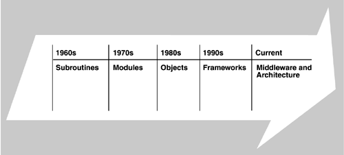

| [ Team LiB ] |
|
Chapter 19. Software Architecture in the Future
The history of programming can be viewed as a succession of ever-increasing facilities for expressing complex functionality. In the beginning, assembly language offered the most elementary of abstractions: exactly where in physical memory things resided (relative to the address in some base register) and the machine code necessary to perform primitive arithmetic and move operations. Even in this primitive environment programs exhibited architectures: Elements were blocks of code connected by physical proximity to one another or knitted together by branching statements or perhaps subroutines whose connectors were of branch-and-return construction. Early programming languages institutionalized these constructs with connectors being the semicolon, the goto statement, and the parameterized function call. The 1960s was the decade of the subroutine. The 1970s saw a concern with the structuring of programs to achieve qualities beyond correct function. Data-flow analysis, entity-relation diagrams, information hiding, and other principles or techniques formed the bases of myriad design methodologies, each of which led to the creation of subroutines or collections of them whose functionality could be rationalized in terms of developmental qualities. These elements were usually called modules. The connectors remained the same, but some module-based programming languages became available to enhance the programmer's ability to create them. Abstractions embedded in these modules became more sophisticated and substantial, and for the first time re-usable modules were packaged in a way so that their inner workings could theoretically be ignored. The 1970s was the decade of the module. In the 1980s, module-based programming languages, information hiding, and associated methodologies crystallized into the concept of objects. Objects became the components du jour, with inheritance adding a new kind of (non-runtime) connector. In the 1990s, standard object-based architectures, in the form of frameworks, started appearing. Objects have given us a standard vocabulary for elements and have led to new infrastructures for wiring collections of elements together. Abstractions have grown more powerful along the way; we now have computing platforms in our homes that let us treat complex entities, such as spreadsheets, documents, graphical images, audio clips, and databases, as interchangeable black-box objects that can be blithely inserted into instances of each other. Architecture places the emphasis above individual elements and on the arrangement of the elements and their interaction. It is this kind of abstraction, away from the focus on individual elements, that makes such breathtaking interoperability possible. In the current decade, we see the rise of middleware and IT architecture as a standard platform. Purchased elements have security, reliability, and performance support services that a decade ago had to be added by individual project developers. We summarize this discussion in Figure 19.1. Figure 19.1. Growth in the types of abstraction available over time This is where we are today. There is no reason to think that the trend toward larger and more powerful abstractions will not continue. Already there are early generators for systems as complex and demanding as database management and avionics, and a generator for a domain is the first sign that the spiral of programming language power for that domain is about to start another upward cycle. The phrase systems of systems is starting to be heard more commonly, suggesting an emphasis on system interoperability and signaling another jump in abstraction power. In this chapter, we will revisit the topics covered in the book. Heeding Niels Bohr, our vision will be not so much predictive as hopeful: We will examine areas of software architecture where things are not as we would wish and point out areas where the research community has some work to do. We begin by recapping what we have learned about the Architecture Business Cycle (ABC) and then discuss the process of creating an architecture, how architecture fits within the life cycle, and how we see components and component frameworks changing the tasks of an architect. |
| [ Team LiB ] |
|